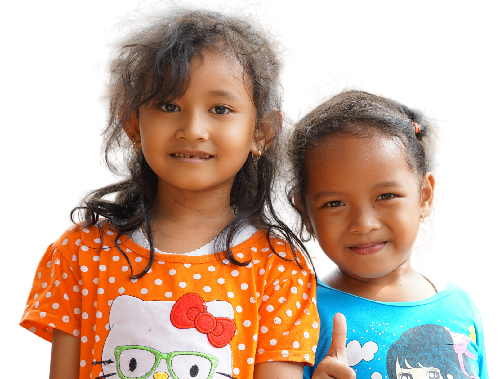

135.000
Anak usia 0–14 tahun tercatat mengalami TBC di Indonesia pada 2024.
Tempat belajar yang ramah untuk mengenal tuberkulosis dan memahami langkah perlindungan kesehatan keluarga.

Tuberkulosis atau TB adalah penyakit infeksi yang perlu kita kenali bersama. Dengan informasi yang tepat, keluarga dapat memahami penularan, mengenali tanda yang perlu diperhatikan, dan mencari pertolongan kesehatan.
Jelajahi artikel kesehatan ↗TB juga berdampak pada anak. Kenali data Indonesia dan dunia agar kita semakin sadar pentingnya pencegahan dan deteksi dini.
Orang tua, keluarga, dan lingkungan punya peran dalam membangun kebiasaan sehat serta memastikan anak memperoleh pemeriksaan dan layanan kesehatan ketika dibutuhkan.
Kenali langkah selanjutnya ↗Baca informasi, temukan dukungan sesama orang tua, dan kenali tanda yang perlu diwaspadai.
Mulai dari mengenal TB dan berbagi informasi yang benar kepada orang-orang di sekitar kita.
Gabung ruang diskusi ↗